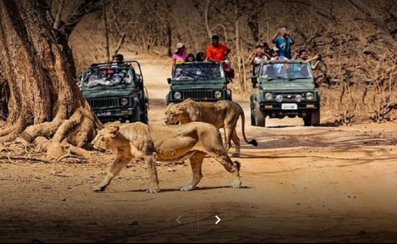

Gir Forest National Park is a wildlife sanctuary in Gujarat, western India. It was established to protect Asiatic lions, who frequent the fenced-off Devalia Safari Park, along with leopards and antelopes.
Gir Jungle Trail, outside the fenced area, traverses deciduous forest and is home to wildlife including vultures and pythons. The Kamleshwar Dam has marsh crocodiles and birds, such as Indian skimmers and pelicans.
